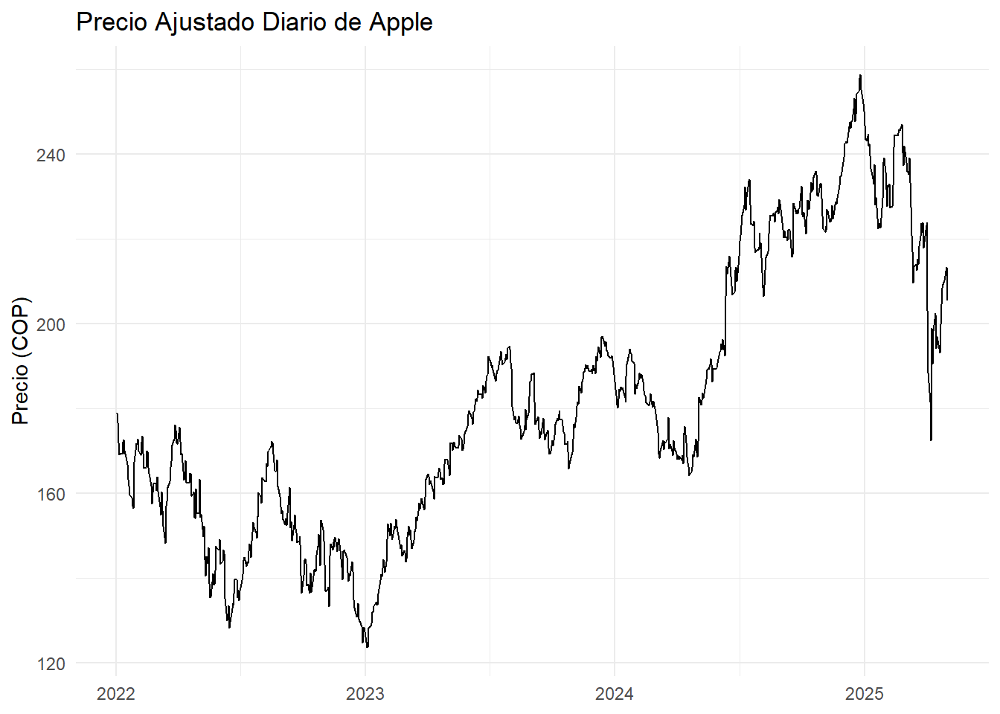

Chapter 5 Unidad 2 · Patrones temporales en precios de acciones
knitr::opts_chunk$set(
echo = TRUE, # mostrar código
message = FALSE,
warning = FALSE,
fig.align = "center",
fig.width = 7,
fig.height = 4
)
library(tidyquant) # facilita la descarga y graficación## Registered S3 method overwritten by 'quantmod':
## method from
## as.zoo.data.frame zoo## ── Attaching core tidyquant packages ─────────────────────── tidyquant 1.0.11 ──
## ✔ PerformanceAnalytics 2.0.8 ✔ TTR 0.24.4
## ✔ quantmod 0.4.27 ✔ xts 0.14.1
## ── Conflicts ────────────────────────────────────────── tidyquant_conflicts() ──
## ✖ zoo::as.Date() masks base::as.Date()
## ✖ zoo::as.Date.numeric() masks base::as.Date.numeric()
## ✖ PerformanceAnalytics::legend() masks graphics::legend()
## ✖ quantmod::summary() masks base::summary()
## ℹ Use the conflicted package (<http://conflicted.r-lib.org/>) to force all conflicts to become errors##
## ######################### Warning from 'xts' package ##########################
## # #
## # The dplyr lag() function breaks how base R's lag() function is supposed to #
## # work, which breaks lag(my_xts). Calls to lag(my_xts) that you type or #
## # source() into this session won't work correctly. #
## # #
## # Use stats::lag() to make sure you're not using dplyr::lag(), or you can add #
## # conflictRules('dplyr', exclude = 'lag') to your .Rprofile to stop #
## # dplyr from breaking base R's lag() function. #
## # #
## # Code in packages is not affected. It's protected by R's namespace mechanism #
## # Set `options(xts.warn_dplyr_breaks_lag = FALSE)` to suppress this warning. #
## # #
## ###############################################################################
##
## Attaching package: 'dplyr'
##
## The following objects are masked from 'package:xts':
##
## first, last
##
## The following objects are masked from 'package:stats':
##
## filter, lag
##
## The following objects are masked from 'package:base':
##
## intersect, setdiff, setequal, union## Registered S3 method overwritten by 'tsibble':
## method from
## as_tibble.grouped_df dplyr
##
## Attaching package: 'tsibble'
##
## The following object is masked from 'package:zoo':
##
## index
##
## The following objects are masked from 'package:base':
##
## intersect, setdiff, union## Loading required package: fabletoolslibrary(quantmod)
library(zoo)
symbol <- "AAPL"
fecha_ini <- as.Date("2022-01-01")
fecha_fin <- Sys.Date()
# 1) Descarga la serie como xts directamente
stock_xts <- getSymbols(symbol,
src = "yahoo",
from = fecha_ini,
to = fecha_fin,
auto.assign = FALSE,
warnings = FALSE)
# 2) Crea un data.frame con fecha + columnas numéricas
stock_df <- data.frame(
fecha = zoo::index(stock_xts),
coredata(stock_xts),
row.names = NULL
)
# 3) Renombra columnas genéricas (suponiendo que symbol="AAPL")
colnames(stock_df) <- c(
"fecha",
"open", "high", "low", "close", "volume", "adjusted"
)
# 4) Selecciona sólo fecha y precio ajustado
precio_df <- stock_df %>%
select(fecha, precio = adjusted)
# 5) Vista previa
head(precio_df)## fecha precio
## 1 2022-01-03 178.8799
## 2 2022-01-04 176.6096
## 3 2022-01-05 171.9118
## 4 2022-01-06 169.0420
## 5 2022-01-07 169.2091
## 6 2022-01-10 169.2288# 6) Vista previa del gráfico de precio ajustado
ggplot(precio_df, aes(fecha, precio)) +
geom_line() +
labs(title = "Precio Ajustado Diario de Apple",
x = NULL,
y = "Precio (COP)") +
theme_minimal()